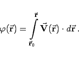
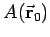
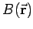
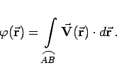
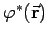
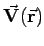
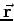

Inhalt Index DeskTop Bronstein

 Vektoranalysis und Feldtheorie Integration in Vektorfeldern Kurvenintegral und Potential im Vektorfeld Konservatives oder Potentialfeld
Vektoranalysis und Feldtheorie Integration in Vektorfeldern Kurvenintegral und Potential im Vektorfeld Konservatives oder Potentialfeld


Potential eines konservativen Feldes, seine Potentialfunktion oder kurz sein Potential, nennt man die skalare Stammfunktion
|  | (13.106a) |
Sie ergibt sich in einem konservativem Feld bei fixiertem Anfangspunkt  und veränderlichem Endpunkt  als Integral
|  | (13.106b) |
Hinweis: Zu beachten ist, daß im Unterschied dazu in der Physik als Potential  einer Funktion  im Punkt  eine Größe verstanden wird, die das entgegengesetzte Vorzeichen besitzt: